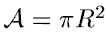

用一篇博文记录所有阅读记录果然8太行，还是一篇论文一篇博客吧
Measurement-Based Analysis of Spatial Degrees of Freedom in Multipath Propagation Channels
论文背景
类型：Transactions On Antennas And Propagation期刊(影响因子4.38左右，跟上一篇差不多)
作者：Katsuyuki Haneda, Afroza Khatun, Marzieh Dashti, Tommi A. Laitinen, Veli-Matti Kolmonen, Jun-Ichi Takada, Pertti Vainikainen(很多都是来自IEEE的研究者，不太眼熟)
部分关键词：无线通信、信道测量、信道自由度、多径信道的丰富程度、MIMO
精读理由：上一篇文章提到了DoF是一种很好的描述信道稀疏性的指标，这次看一看它是怎么计算的
原文：Measurement-Based Analysis of Spatial Degrees of Freedom in Multipath Propagation Channels
正文
Abstract
这次一边列出原文一边分析吧：
The DoF of the multipath channels on the transmit (Tx) side is derived by means of the spherical-wave expansion of electromagnetic fields radiated from a Tx antenna array having a certain aperture size. The DoF estimates are independent of particular realization of antenna elements on the Tx aperture.
天线发射端的多径信道自由度是通过计算特定孔径大小的天线发出的球面波扩展得到的，与特定的天线元件配置无关。孔径、球面波扩展，都是之前没怎么接触过的概念，希望下文能解释清楚吧，不然笔者又得去谷歌了orz
Having confirmed the soundness of our DoF estimation method by channel measurements in an anechoic chamber, the DoF of indoor multipath channels is analyzed.
文章出了提出计算方法，也在暗室里做了验证，那结果可能是比较有说服力的。另外也做了一些分析，这个到正文的时候再说吧。
Our analysis method is extendable to the multiple-input multiple-output regime in a straightforward manner.
文中的计算、验证均是在MISO的条件下进行的，按照文章说法可以直接迁移到MIMO中。
总体来说，这个文章应该是提出一个算法，然后自己对它进行测量验证，还做了一些分析，感觉挺靠谱，看看下文怎么说。
一.Introduction
第一段：多天线技术兴起，带动建模研究，有平面波和球面波两种方法，后者好处更多。
第二段：传播信道可以由天线的体积和孔径大小决定，这一特性使得可以定义一个多径信道的丰富程度的度量，这个多径的丰富度和信道的自由度强相关，而自由度就是给定体积或孔径中可以被有效利用的天线单元的最大数量。
第三段：文章给出一种基于球面波扩展的DoF估计方法，并且做了基于测量的有效性验证。
第四段：文章结构，略。
信息量并不大，基本就是把Abstract扩写了一遍，重点看下面的内容吧。
二.Spatial DOF Of The MISO Propagation Channels
这部分的内容分为三块，分别讨论了空间DoF的物理意义、MISO信道以及MISO信道下的DoF。
Physical Meaning of the Spatial DoF
这部分看完依旧一头雾水，打算一边整理思路一边写了。
首先从天线孔径这一概念入手。维基百科上的说法如下：
The aperture is defined as the area, oriented perpendicular to the direction of an incoming electromagnetic wave, which would intercept the same amount of power from that wave as is produced by the antenna receiving it.
接收天线接收到信号时，会产生一定功率的信号(这部分自己理解应该是电磁感应产生的，毕竟接收天线不是把外界的电磁波直接给下方)给处理端。把天线周围的区域等效为一块与电磁波的传播方向垂直，特定面积大小的面，通过这个面的电磁波的功率，与接收天线接收到信号后产生的功率是相等的。这个面的面积就是所谓的天线孔径。显然，作为面积，它的单位应该是面积的单位，比如平方米。在本文中，天线会产生半径为R的球形孔径，那么它的面积就是：
